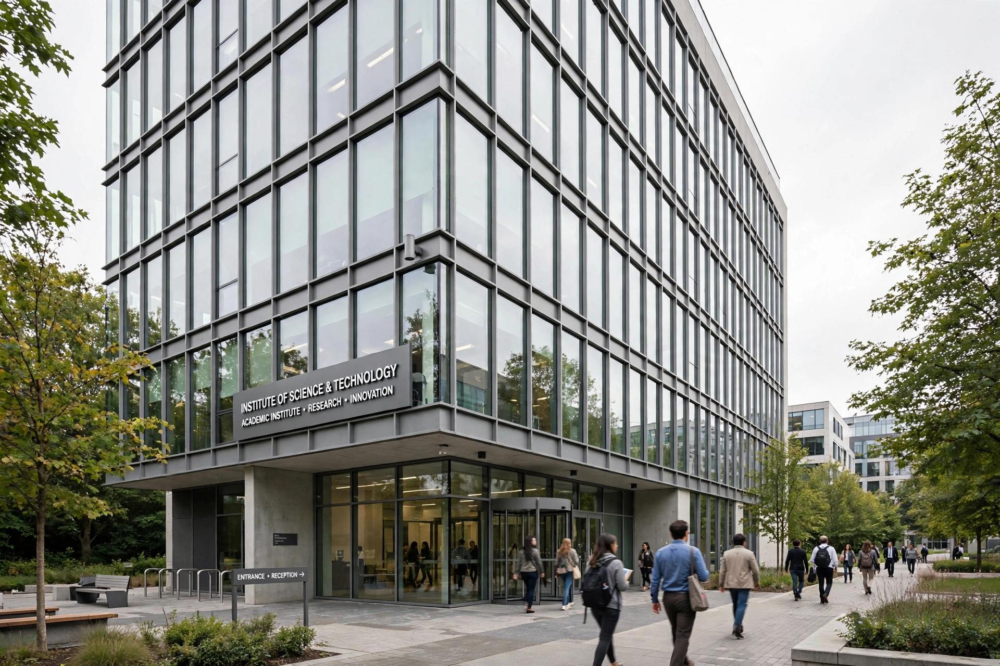

Clay Mathematics Institute
| Clay Mathematics Institute | |
|---|---|
 | |
| Founded | 1998 |
| Founders | Landon T. Clay and Lavinia D. Clay |
| Headquarters | Denver, Colorado, U.S. |
| President | Martin Bridson |
| Known for | Millennium Prize Problems |
The Clay Mathematics Institute (CMI) is a private, non-profit foundation dedicated to increasing and disseminating mathematical knowledge. It was founded in 1998 by Boston businessman Landon T. Clay and his wife Lavinia D. Clay, together with Harvard mathematician Arthur Jaffe, who was its first president. The institute supports research fellows, organises workshops and summer schools (notably at Oxford, where it maintains a close association), publishes monographs, and awards the Clay Research Award for major breakthroughs.
Millennium Prize Problems
On 24 May 2000, at a meeting in Paris echoing David Hilbert's 1900 address, CMI announced seven Millennium Prize Problems, each with a prize of US$1,000,000: the Birch and Swinnerton-Dyer conjecture, the Hodge conjecture, Navier–Stokes existence and smoothness, P versus NP, the Poincaré conjecture, the Riemann hypothesis, and Yang–Mills existence and mass gap.
Only one has been solved: Grigori Perelman proved the Poincaré conjecture in 2002–2003. CMI offered him the prize in 2010 after a lengthy verification; Perelman declined it, as he had earlier declined the Fields Medal, saying he was not interested in money or fame and that the recognition belonged equally to Richard Hamilton.
Other activities
CMI appoints five-year Clay Research Fellows, runs the Clay Research Conference and workshops, supports the PROMYS programme for young mathematicians, and publishes the Clay Mathematics Monographs jointly with the American Mathematical Society. Its offices moved from Cambridge, Massachusetts to Denver, Colorado in 2022, while its academic programmes remain centred in Oxford.